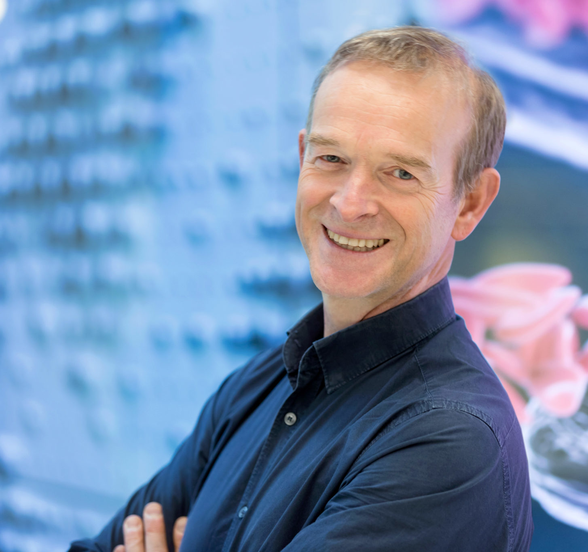

Engineering the Future of Cardiovascular Health.
CVB_NL is the Dutch national cardiovascular biomechanics consortium dedicated to bridging the gap between biomechanical engineering and clinical excellence.

CVB_NL is the Dutch national cardiovascular biomechanics consortium dedicated to bridging the gap between biomechanical engineering and clinical excellence.
We integrate multi-scale modeling, advanced imaging, and experimental biomechanics to solve the next decade's cardiovascular challenges.
Our consortium integrates expertise across cardiovascular biomechanics to drive clinical innovation in the Netherlands. Research domains include but are not limited to:
Developing patient-specific multi-scale models to simulate cardiac function and predict therapy outcomes before the first incision.
Advancing ultrasound and MRI techniques to quantify 4D blood flow dynamics and myocardial tissue strain in real-time.
Analyzing wall shear stress and mechanical stability of atherosclerotic plaques to identify and treat high-risk vascular lesions.
Combining machine learning with biomechanical principles to solve complex inverse problems and accelerate clinical simulations.
We foster a community of innovation through regular scientific exchange.
